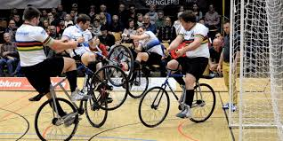

Spor, 1883 yılında Amerikalı artistik bisikletçi Nicholas Edward Kaufmann tarafından tanıtıldı.İlk maç o yıl 14 Eylül'de Kaufmann ve diğer artistik bisikletçi John Featherly arasında oynandı.ilk dünya şampiyonası 1929'da gerçekleşti. 20. yüzyılın başlarında spor Almanya'ya yayıldı; günümüzde Almanya, sporun en büyük hayran kitlesinin bulunduğu yerdir. Bu spora tam manasıyla bisiklet üzerinde oynanan futbol diyebiliriz.Halk arasındaki adı ise “Almanca” muhteşem top anlamına gelen “Radball”.  Oyunun kuralları ise şöyledir;
| No. | Sporcu | Ülke | Altın | Gümüş | Bronz |
| 1 | David Schnabel | Almanya | 8 | 1 | 0 |
| 2 | Martin Rominger | Almanya | 7 | 0 | 0 |
| 3 | Lukas Kohl | Almanya | 7 | 0 | 1 |
| 4 | Arnold Tschopp | İsviçre | 6 | 2 | 0 |
| 5 | Maute | Almanya | 5 | 3 | 1 |